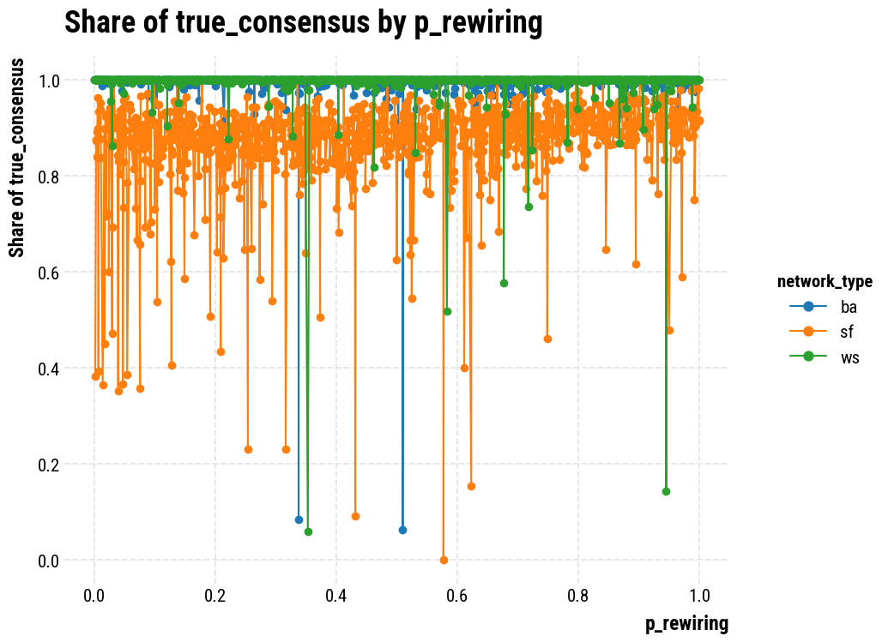
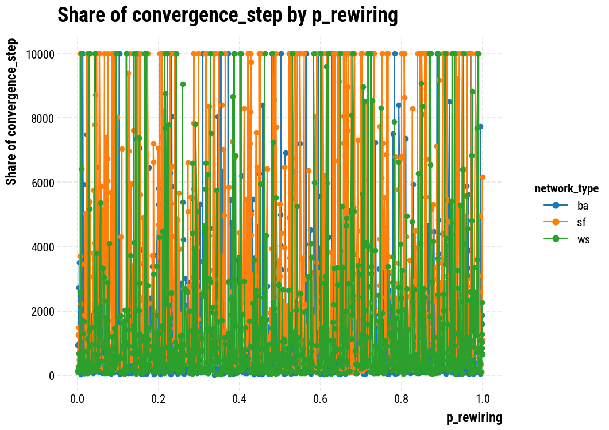
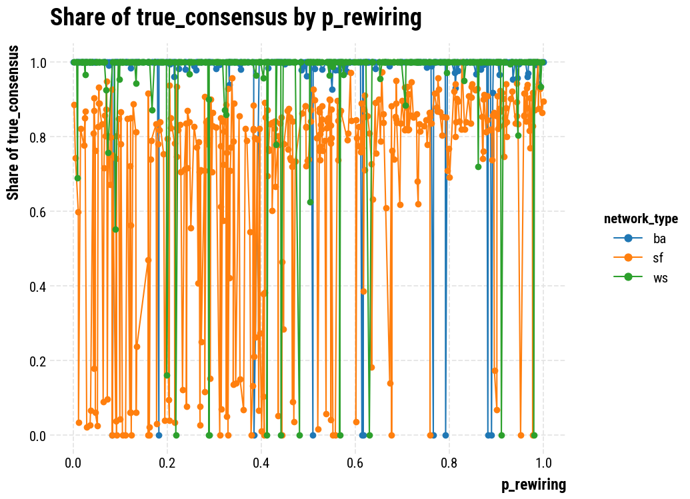
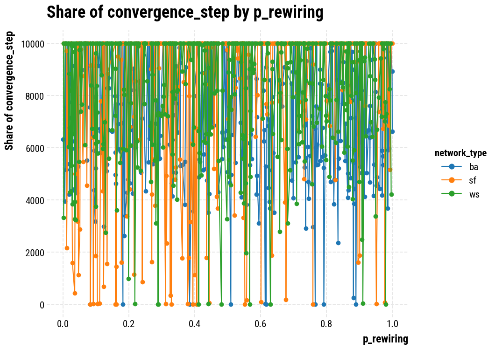

import numpy as np
from agents_clean import Agent
from model_clean import Model
from hybrid_networks_clean import rewire_network, randomize_network_v2, create_hybrid_network
from tqdm import tqdm
import networkx as nx
import pandas as pd
import random
import numbers
import opinionated
import matplotlib.pyplot as plt
plt.style.use("opinionated_rc")
import colormaps as cmaps Setup
Generate Parameters
def generate_parameters(n,rewiring_type='randomize',network_type='ba'):
params_list = []
#print('Generating parameters...')
for _ in tqdm(range(n),desc="Generating parameters"):
n_agents = random.randint(11, 200)
ba_degree = random.randint(2, 10)
er_prob=random.uniform(0, 0.25)
p_rewiring = random.uniform(0, 1)
if rewiring_type=='hierarchical': # test
G_er = nx.gnp_random_graph(n_agents, er_prob, directed=True)
network = rewire_network(G_er, p_rewiring=p_rewiring)
if rewiring_type=='randomize':
if network_type=='ba':
G = nx.barabasi_albert_graph(n_agents, ba_degree)
network = randomize_network_v2(G, p_rewiring=p_rewiring)
if network_type=='sf':
G = nx.scale_free_graph(n_agents)
network = randomize_network_v2(G, p_rewiring=p_rewiring)
if network_type=='ws':
network=nx.watts_strogatz_graph(n_agents, ba_degree, p=p_rewiring, seed=None)
# Calculate the mean degree of each node
degrees = dict(network.degree())
mean_degree = sum(degrees.values()) / len(degrees)
uncertainty = random.uniform(0.001,0.01)
n_experiments = random.randint(10, 100)
params = {
"n_agents": n_agents,
"ba_degree": ba_degree,
"er_prob":er_prob,
"p_rewiring": p_rewiring,
"network": network,
"uncertainty": uncertainty,
"n_experiments": n_experiments,
"rewiring_type":rewiring_type,
'mean_degree':mean_degree,
'network_type': network_type
}
params_list.append(params)
return params_list# Example usage
parameter_dictionaries = generate_parameters(2,rewiring_type='randomize',network_type='sf') # Generate parameter dictionaries
parameter_dictionariesGenerating parameters: 100%|██████████| 2/2 [00:00<00:00, 324.31it/s][{'n_agents': 20,
'ba_degree': 3,
'er_prob': 0.23021878629000345,
'p_rewiring': 0.9569214956996234,
'network': <networkx.classes.multidigraph.MultiDiGraph at 0x7f9718a5dc60>,
'uncertainty': 0.00765754483550966,
'n_experiments': 96,
'rewiring_type': 'randomize',
'mean_degree': 5.8,
'network_type': 'sf'},
{'n_agents': 52,
'ba_degree': 4,
'er_prob': 0.21150056254662594,
'p_rewiring': 0.7085773474819586,
'network': <networkx.classes.multidigraph.MultiDiGraph at 0x7f9718a5e590>,
'uncertainty': 0.006490942040567325,
'n_experiments': 57,
'rewiring_type': 'randomize',
'mean_degree': 4.846153846153846,
'network_type': 'sf'}]Simulation Functions
def run_simulation_with_params(param_dict, number_of_steps=10000, agent_type="bayes"):
# Extract the network directly since it's already a NetworkX graph object
my_network = param_dict['network']
#agent_type = param_dict['agent_type']
# Other parameters are directly extracted from the dictionary
my_model = Model(my_network, n_experiments=param_dict['n_experiments'], uncertainty=param_dict['uncertainty']
, agent_type=agent_type)
# Run the simulation with predefined steps and show_bar option
my_model.run_simulation(number_of_steps=number_of_steps, show_bar=False)
result_dict = {
key: value
for key, value in param_dict.items()
if isinstance(value, (numbers.Number, str, tuple, list))}
result_dict['true_consensus'] = my_model.conclusion
#result_dict['true_consensus_alternative_stop'] = my_model.conclusion_alternative_stop
#df = pd.DataFrame(my_model.agents_choices)
#result_dict['choice_consensus'] = df.mean()[len(df.mean())-1]
result_dict['convergence_step'] = my_model.n_steps # takes note of the last reported step
result_dict['agent_type']=agent_type
result_dict['n_experiments']=param_dict['n_experiments']
result_dict['network_type']=param_dict['network_type']
return result_dict
def run_simulations(param_list, number_of_steps=10000,agent_type="bayes"):
def run_simulation(param_dict):
return run_simulation_with_params(param_dict, number_of_steps=number_of_steps, agent_type=agent_type)
results = []
# Iterate over each parameter dictionary in the list
for params in tqdm(param_list, desc="Running simulations"):
result = run_simulation(params)
results.append(result)
# Convert the list of results into a Pandas DataFrame
results_df = pd.DataFrame(results)
return results_dfRun Simulations
# Test Simulation
parameter_dictionaries = generate_parameters(2,rewiring_type='randomize',network_type='ba') # Generate parameter dictionaries
#print(parameter_dictionaries)
test_results_df = run_simulations(parameter_dictionaries, number_of_steps=10000, agent_type="bayes")
test_results_df.to_csv('test_results_df.csv', index=False)
test_results_df.head()Generating parameters: 100%|██████████| 2/2 [00:00<00:00, 280.82it/s]
Running simulations: 100%|██████████| 2/2 [00:02<00:00, 1.22s/it]| n_agents | ba_degree | er_prob | p_rewiring | uncertainty | n_experiments | rewiring_type | mean_degree | network_type | true_consensus | convergence_step | agent_type | |
|---|---|---|---|---|---|---|---|---|---|---|---|---|
| 0 | 28 | 9 | 0.154653 | 0.137114 | 0.006661 | 50 | randomize | 11.428571 | ba | 1.000000 | 223 | bayes |
| 1 | 187 | 2 | 0.116817 | 0.932996 | 0.005781 | 21 | randomize | 3.935829 | ba | 0.983957 | 1795 | bayes |
# Bayes Agent
do_initial_simulation = False
if do_initial_simulation:
n_sims = 10 # this is for each type of rewiring
bayes_results_df = pd.DataFrame(columns=test_results_df.columns)
for rewiring_type in ['randomize']:
for type_of_network in ['ba','sf','ws']:
parameter_dictionaries = generate_parameters(n_sims,rewiring_type=rewiring_type,
network_type=type_of_network) # Generate parameter dictionaries
results_df1 = run_simulations(parameter_dictionaries, number_of_steps=10000,
agent_type="bayes")
bayes_results_df = pd.concat([bayes_results_df, results_df1], ignore_index=True)
bayes_results_df.to_csv('bayesagent_results_df.csv', index=False)
saved_bayes_results_df = pd.read_csv('bayesagent_results_df.csv')
add_simulations = False
if add_simulations:
n_sims = 500 # this is for each type of rewiring
bayes_results_df = pd.DataFrame(columns=test_results_df.columns)
for rewiring_type in ['randomize']:
for type_of_network in ['ba','sf','ws']:
parameter_dictionaries = generate_parameters(n_sims,rewiring_type=rewiring_type,
network_type=type_of_network) # Generate parameter dictionaries
results_df1 = run_simulations(parameter_dictionaries, number_of_steps=10000,
agent_type="bayes")
bayes_results_df = pd.concat([bayes_results_df, results_df1], ignore_index=True)
bayes_results_df = pd.concat([saved_bayes_results_df, bayes_results_df], ignore_index=True)
bayes_results_df.to_csv('bayesagent_results_df.csv', index=False)
else:
bayes_results_df=saved_bayes_results_df
bayes_results_df.info()Generating parameters: 0%| | 0/500 [00:00<?, ?it/s]Generating parameters: 100%|██████████| 500/500 [00:03<00:00, 152.32it/s]
Running simulations: 100%|██████████| 500/500 [11:03<00:00, 1.33s/it]
Generating parameters: 100%|██████████| 500/500 [00:02<00:00, 191.29it/s]
Running simulations: 100%|██████████| 500/500 [13:43<00:00, 1.65s/it]
Generating parameters: 100%|██████████| 500/500 [00:00<00:00, 720.16it/s]
Running simulations: 100%|██████████| 500/500 [11:04<00:00, 1.33s/it]<class 'pandas.core.frame.DataFrame'>
RangeIndex: 3000 entries, 0 to 2999
Data columns (total 12 columns):
# Column Non-Null Count Dtype
--- ------ -------------- -----
0 n_agents 3000 non-null object
1 ba_degree 3000 non-null object
2 er_prob 3000 non-null float64
3 p_rewiring 3000 non-null float64
4 uncertainty 3000 non-null float64
5 n_experiments 3000 non-null object
6 rewiring_type 3000 non-null object
7 mean_degree 3000 non-null float64
8 network_type 3000 non-null object
9 true_consensus 3000 non-null float64
10 convergence_step 3000 non-null object
11 agent_type 3000 non-null object
dtypes: float64(5), object(7)
memory usage: 281.4+ KB# Beta Agent
do_initial_simulation = False
if do_initial_simulation:
n_sims = 1
beta_results_df = pd.DataFrame(columns=test_results_df.columns)
for rewiring_type in ['randomize']:
for type_of_network in ['ba','sf','ws']:
parameter_dictionaries = generate_parameters(n_sims,rewiring_type=rewiring_type,
network_type=type_of_network) # Generate parameter dictionaries
results_df1 = run_simulations(parameter_dictionaries,
number_of_steps=10000, agent_type="beta")
beta_results_df = pd.concat([beta_results_df, results_df1], ignore_index=True)
beta_results_df.to_csv('betaagent_results_df.csv', index=False)
saved_beta_results_df = pd.read_csv('betaagent_results_df.csv')
add_simulations = False
if add_simulations:
n_sims = 100 # this is for each type of rewiring
beta_results_df = pd.DataFrame(columns=test_results_df.columns)
for rewiring_type in ['randomize']:
for type_of_network in ['ba','sf','ws']:
parameter_dictionaries = generate_parameters(n_sims,rewiring_type=rewiring_type,
network_type=type_of_network) # Generate parameter dictionaries
results_df1 = run_simulations(parameter_dictionaries,
number_of_steps=10000, agent_type="beta")
beta_results_df = pd.concat([beta_results_df, results_df1], ignore_index=True)
beta_results_df = pd.concat([saved_beta_results_df, beta_results_df], ignore_index=True)
beta_results_df.to_csv('betaagent_results_df.csv', index=False)
else:
beta_results_df = saved_beta_results_df
beta_results_df.info()Generating parameters: 100%|██████████| 200/200 [00:01<00:00, 100.51it/s]
Running simulations: 100%|██████████| 200/200 [5:48:37<00:00, 104.59s/it]
Generating parameters: 100%|██████████| 200/200 [00:00<00:00, 230.42it/s]
Running simulations: 100%|██████████| 200/200 [5:53:55<00:00, 106.18s/it]
Generating parameters: 100%|██████████| 200/200 [00:00<00:00, 289.75it/s]
Running simulations: 100%|██████████| 200/200 [5:49:56<00:00, 104.98s/it] <class 'pandas.core.frame.DataFrame'>
RangeIndex: 1200 entries, 0 to 1199
Data columns (total 12 columns):
# Column Non-Null Count Dtype
--- ------ -------------- -----
0 n_agents 1200 non-null object
1 ba_degree 1200 non-null object
2 er_prob 1200 non-null float64
3 p_rewiring 1200 non-null float64
4 uncertainty 1200 non-null float64
5 n_experiments 1200 non-null object
6 rewiring_type 1200 non-null object
7 mean_degree 1200 non-null float64
8 network_type 1200 non-null object
9 true_consensus 1200 non-null float64
10 convergence_step 1200 non-null object
11 agent_type 1200 non-null object
dtypes: float64(5), object(7)
memory usage: 112.6+ KBNow Some Plotting
grouped = beta_results_df.groupby(['rewiring_type', 'p_rewiring'])['true_consensus'].mean().reset_index()
grouped| rewiring_type | p_rewiring | true_consensus | |
|---|---|---|---|
| 0 | randomize | 0.002102 | 0.885246 |
| 1 | randomize | 0.002223 | 1.000000 |
| 2 | randomize | 0.005030 | 0.742424 |
| 3 | randomize | 0.006915 | 1.000000 |
| 4 | randomize | 0.009420 | 1.000000 |
| ... | ... | ... | ... |
| 589 | randomize | 0.992752 | 0.928571 |
| 590 | randomize | 0.993719 | 0.934641 |
| 591 | randomize | 0.996146 | 1.000000 |
| 592 | randomize | 0.998911 | 1.000000 |
| 593 | randomize | 0.999489 | 1.000000 |
594 rows × 3 columns
Basic Plotting
def plot_results(results_df=bayes_results_df,variable_of_interest = 'true_consensus',regressor = 'n_agents'):
grouped = results_df.groupby(['network_type', regressor])[variable_of_interest].mean().reset_index()
# Preparing for the line plot
#grouped['mid_bin'] = grouped['binned'].apply(lambda x: x.mid).astype(float) # Getting the midpoint of bins for plotting
# Plotting
plt.figure(figsize=(10, 8))
for network_type in results_df['network_type'].unique():
subset = grouped[grouped['network_type'] == network_type]
plt.plot(subset[regressor], subset[variable_of_interest], marker='o', label=network_type)
plt.xlabel(regressor)
plt.ylabel('Share of '+variable_of_interest)
plt.title('Share of '+ variable_of_interest +' by ' + regressor)
opinionated.add_legend(title='network_type')
plt.grid(True)
plt.show()plot_results(bayes_results_df,variable_of_interest = 'true_consensus',regressor = 'p_rewiring')
plot_results(bayes_results_df,variable_of_interest = 'convergence_step',regressor = 'p_rewiring')
plot_results(beta_results_df,variable_of_interest = 'true_consensus',regressor = 'p_rewiring')
plot_results(beta_results_df,variable_of_interest = 'convergence_step',regressor = 'p_rewiring')



More Advanced Plotting
from pygam import LogisticGAM, s
from sklearn.model_selection import train_test_splitModuleNotFoundError: No module named 'pygam'bayes_results_df.info()<class 'pandas.core.frame.DataFrame'>
RangeIndex: 1060 entries, 0 to 1059
Data columns (total 13 columns):
# Column Non-Null Count Dtype
--- ------ -------------- -----
0 n_agents 1060 non-null object
1 ba_degree 1060 non-null object
2 er_prob 1060 non-null float64
3 p_rewiring 1060 non-null float64
4 uncertainty 1060 non-null float64
5 n_experiments 1060 non-null object
6 rewiring_type 1060 non-null object
7 mean_degree 1060 non-null float64
8 true_consensus 1060 non-null float64
9 true_consensus_alternative_stop 1060 non-null object
10 choice_consensus 1060 non-null float64
11 convergence_step 1060 non-null object
12 agent_type 1060 non-null object
dtypes: float64(6), object(7)
memory usage: 107.8+ KBFirst Just on Number of Agents
def do_regression(results_df=bayes_results_df,variable_of_interest = 'true_consensus'):
# Splitting the DataFrame by network type
network_types = results_df['rewiring_type'].unique()
my_gams = {}
for network_type in network_types:
# Subset the DataFrame by network type
subset = results_df[results_df['rewiring_type'] == network_type]
# Preparing the data
X = subset[['n_agents','uncertainty','p_rewiring','mean_degree']]
y = subset[variable_of_interest]#.astype(int) # Convert boolean to integer
# Splitting the data into training and testing sets for model validation
X_train, X_test, y_train, y_test = train_test_split(X, y, test_size=0.3, random_state=42)
# Fitting the Logistic GAM model
gam = LogisticGAM(s(0,n_splines=6)).fit(X_train, y_train)
# Storing the model
my_gams[network_type] = gam
# Optionally, you can print out model accuracy or other statistics here
print(f"Model for {network_type}:")
print(f"Accuracy on training data: {gam.accuracy(X_train, y_train)}")
print(f"Accuracy on test data: {gam.accuracy(X_test, y_test)}")
print("-" * 30)
return my_gams,X
do_regression()Model for hierarchical:
Accuracy on training data: 0.8301886792452831
Accuracy on test data: 0.7861635220125787
------------------------------
Model for randomize:
Accuracy on training data: 0.7547169811320755
Accuracy on test data: 0.7044025157232704
------------------------------/Users/ignacioojea/anaconda3/lib/python3.10/site-packages/pygam/pygam.py:1151: RuntimeWarning: invalid value encountered in scalar divide
r2['McFadden'] = full_ll / null_ll
/Users/ignacioojea/anaconda3/lib/python3.10/site-packages/pygam/pygam.py:1152: RuntimeWarning: invalid value encountered in scalar divide
r2['McFadden_adj'] = 1.0 - (full_ll - self.statistics_['edof']) / null_ll
/Users/ignacioojea/anaconda3/lib/python3.10/site-packages/pygam/pygam.py:1151: RuntimeWarning: invalid value encountered in scalar divide
r2['McFadden'] = full_ll / null_ll
/Users/ignacioojea/anaconda3/lib/python3.10/site-packages/pygam/pygam.py:1152: RuntimeWarning: invalid value encountered in scalar divide
r2['McFadden_adj'] = 1.0 - (full_ll - self.statistics_['edof']) / null_ll({'hierarchical': LogisticGAM(callbacks=[Deviance(), Diffs(), Accuracy()],
fit_intercept=True, max_iter=100, terms=s(0) + intercept,
tol=0.0001, verbose=False),
'randomize': LogisticGAM(callbacks=[Deviance(), Diffs(), Accuracy()],
fit_intercept=True, max_iter=100, terms=s(0) + intercept,
tol=0.0001, verbose=False)},
n_agents uncertainty p_rewiring mean_degree
10 115 0.009738 0.867927 9.391304
11 302 0.007404 0.215158 11.688742
12 238 0.001524 0.231605 18.857143
13 51 0.005738 0.375522 3.686275
14 34 0.007960 0.430805 5.235294
... ... ... ... ...
1055 275 0.008866 0.145741 5.912727
1056 366 0.001473 0.826891 61.311475
1057 120 0.003437 0.197620 18.016667
1058 291 0.006569 0.159598 41.498282
1059 443 0.006120 0.675676 26.492099
[530 rows x 4 columns])def do_regression(results_df=bayes_results_df,variable_of_interest = 'true_consensus'):
# Splitting the DataFrame by network type
network_types = results_df['rewiring_type'].unique()
my_gams = {}
for network_type in network_types:
# Subset the DataFrame by network type
subset = results_df[results_df['rewiring_type'] == network_type]
# Preparing the data
X = subset[['n_agents','uncertainty','p_rewiring','mean_degree']]
y = subset[variable_of_interest]#.astype(int) # Convert boolean to integer
# Splitting the data into training and testing sets for model validation
X_train, X_test, y_train, y_test = train_test_split(X, y, test_size=0.3, random_state=42)
# Fitting the Logistic GAM model
gam = LogisticGAM(s(0,n_splines=6)).fit(X_train, y_train)
# Storing the model
my_gams[network_type] = gam
# Optionally, you can print out model accuracy or other statistics here
print(f"Model for {network_type}:")
print(f"Accuracy on training data: {gam.accuracy(X_train, y_train)}")
print(f"Accuracy on test data: {gam.accuracy(X_test, y_test)}")
print("-" * 30)
return my_gams,X
do_regression()Model for hierarchical:
Accuracy on training data: 0.8301886792452831
Accuracy on test data: 0.7861635220125787
------------------------------
Model for randomize:
Accuracy on training data: 0.7547169811320755
Accuracy on test data: 0.7044025157232704
------------------------------/Users/ignacioojea/anaconda3/lib/python3.10/site-packages/pygam/pygam.py:1151: RuntimeWarning: invalid value encountered in scalar divide
r2['McFadden'] = full_ll / null_ll
/Users/ignacioojea/anaconda3/lib/python3.10/site-packages/pygam/pygam.py:1152: RuntimeWarning: invalid value encountered in scalar divide
r2['McFadden_adj'] = 1.0 - (full_ll - self.statistics_['edof']) / null_ll
/Users/ignacioojea/anaconda3/lib/python3.10/site-packages/pygam/pygam.py:1151: RuntimeWarning: invalid value encountered in scalar divide
r2['McFadden'] = full_ll / null_ll
/Users/ignacioojea/anaconda3/lib/python3.10/site-packages/pygam/pygam.py:1152: RuntimeWarning: invalid value encountered in scalar divide
r2['McFadden_adj'] = 1.0 - (full_ll - self.statistics_['edof']) / null_ll({'hierarchical': LogisticGAM(callbacks=[Deviance(), Diffs(), Accuracy()],
fit_intercept=True, max_iter=100, terms=s(0) + intercept,
tol=0.0001, verbose=False),
'randomize': LogisticGAM(callbacks=[Deviance(), Diffs(), Accuracy()],
fit_intercept=True, max_iter=100, terms=s(0) + intercept,
tol=0.0001, verbose=False)},
n_agents uncertainty p_rewiring mean_degree
10 115 0.009738 0.867927 9.391304
11 302 0.007404 0.215158 11.688742
12 238 0.001524 0.231605 18.857143
13 51 0.005738 0.375522 3.686275
14 34 0.007960 0.430805 5.235294
... ... ... ... ...
1055 275 0.008866 0.145741 5.912727
1056 366 0.001473 0.826891 61.311475
1057 120 0.003437 0.197620 18.016667
1058 291 0.006569 0.159598 41.498282
1059 443 0.006120 0.675676 26.492099
[530 rows x 4 columns])X.head()| n_agents | uncertainty | p_rewiring | mean_degree | |
|---|---|---|---|---|
| 10 | 142 | 0.007550 | 0.100761 | 23.281690 |
| 11 | 190 | 0.008980 | 0.756384 | 26.442105 |
| 12 | 44 | 0.002884 | 0.916358 | 1.863636 |
| 13 | 375 | 0.009186 | 0.710161 | 49.413333 |
| 14 | 80 | 0.006021 | 0.951762 | 13.600000 |
def plot_regression(results_df=bayes_results_df,variable_of_interest = 'true_consensus'):
my_gams,X = do_regression(results_df=results_df,variable_of_interest = variable_of_interest)
# Set the size of the figure
plt.figure(figsize=(10, 6))
cmap= cmaps.colorblind_10
X_range = np.linspace(X['n_agents'].min(), X['n_agents'].max(), 100)
colors =[cmap(0), cmap(1/cmap.N), cmap(1/cmap.N*2)]
for i, (network_type, gam) in enumerate(my_gams.items()):
conf = gam.confidence_intervals(X_range.reshape(-1, 1), width=0.95, quantiles=None)
plt.fill_between(X_range, conf[:, 0], conf[:, 1], facecolor=colors[i], alpha=0.2, interpolate=True)
for i, (network_type, gam) in enumerate(my_gams.items()):
# Generating a range of values for n_agents to predict and plot
# Predicting with the model
#y_pred, conf = pdep, confi = model.partial_dependence(term=0, width=.95)
y_pred = gam.predict_proba(X_range.reshape(-1, 1))
# Plotting predicted probabilities
plt.plot(X_range, y_pred,c=colors[i], label=f'{network_type}')
# Adding title, labels, and legend
plt.title('Effect of n_agents on '+ variable_of_interest +' Probability')
plt.xlabel('Number of Agents')
plt.ylabel('Probability of ' +variable_of_interest)
plt.legend()
plt.show()plot_regression(bayes_results_df)/Users/ignacioojea/anaconda3/lib/python3.10/site-packages/pygam/pygam.py:1151: RuntimeWarning: invalid value encountered in scalar divide
r2['McFadden'] = full_ll / null_ll
/Users/ignacioojea/anaconda3/lib/python3.10/site-packages/pygam/pygam.py:1152: RuntimeWarning: invalid value encountered in scalar divide
r2['McFadden_adj'] = 1.0 - (full_ll - self.statistics_['edof']) / null_ll
/Users/ignacioojea/anaconda3/lib/python3.10/site-packages/pygam/pygam.py:1151: RuntimeWarning: invalid value encountered in scalar divide
r2['McFadden'] = full_ll / null_ll
/Users/ignacioojea/anaconda3/lib/python3.10/site-packages/pygam/pygam.py:1152: RuntimeWarning: invalid value encountered in scalar divide
r2['McFadden_adj'] = 1.0 - (full_ll - self.statistics_['edof']) / null_llModel for hierarchical:
Accuracy on training data: 0.8301886792452831
Accuracy on test data: 0.7861635220125787
------------------------------
Model for randomize:
Accuracy on training data: 0.7547169811320755
Accuracy on test data: 0.7044025157232704
------------------------------ValueError: X data must have 4 features, but found 1<Figure size 1000x600 with 0 Axes>plot_full(results_df=bayes_results_df,variable_of_interest = 'true_consensus')
plot_full(results_df=bayes_results_df,variable_of_interest = 'choice_consensus')
plot_full(results_df=bayes_results_df,variable_of_interest = 'convergence_step')KeyError: "['degree'] not in index"